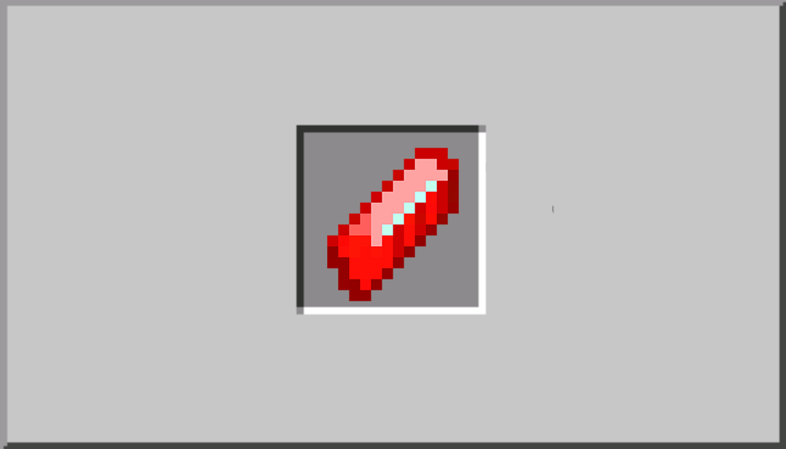
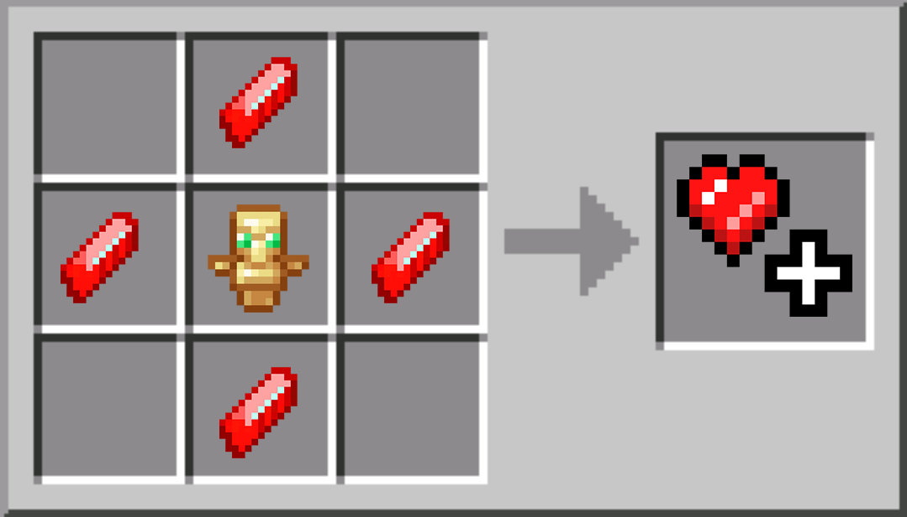
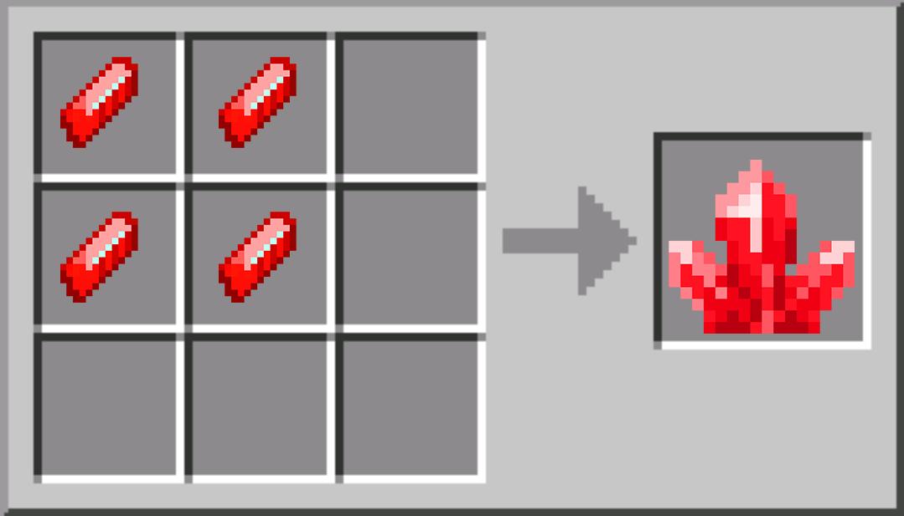
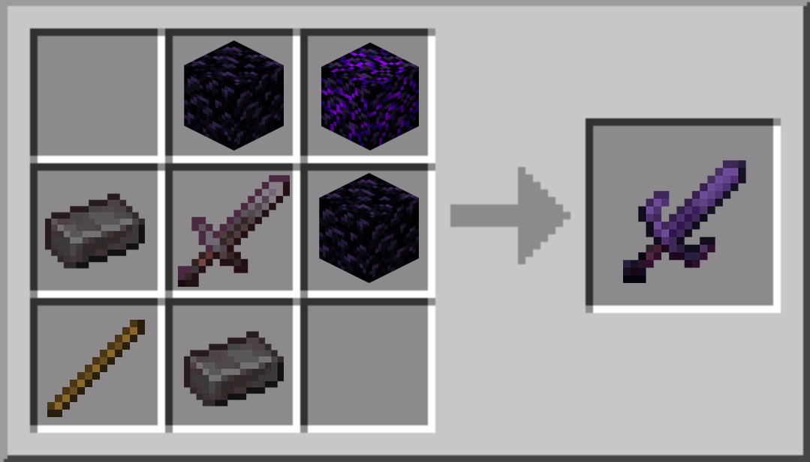

Welcome to MOMCHAT SMP

Glider
Objeto nuevo para planear y agilizar tu movimiento a lo largo del mundo.
Hey, el fin no está tan cerca, tenemos que ingeniarla por ahora. Craftea este planeador de cuero y papel con 30 de durabilidad para poder movilizarte a lo largo del mundo mientras que el END esté cerrado.

Health Fragment
El Health Fragment (Fragmento de vida) es un objeto que tiene un 5% de chance de ser droppeado por los Mobs hostiles.
Este cristal es importante y bastante valioso, debido a que con este puedes hacer 2 objetos. Uno de ellos es el Heart Crystal y el segundo es el Healing Crystal. El comercio de estos es ilegal como la droga.

Heart Crystal
El Crystal Heart (Corazón de Cristal) es un objeto crafteable con los Health Fragments (Fragmentos de vida).
Este objeto al ser consumido, te dará un corazón extra a tu vida permanente, con un máximo de 10 corazones extra. (20 de vida base + 20 de vida con los cristales máximo). Bastante util, en especial si el mundo es propenso a que su luz se apague.

Healing Crystal
El Healing Crystal (Cristal de Curación) es un cristal que al consumirlo te cura 2 corazones de vida de manera casi instantánea.
Si te sobran Health Fragments después de subirte tu vida máxima, puedes usarlos con este proposito (al estilo de una curación instantanea), con un máximo stackeable de 16. No desperdicies esos fragmentos.

Obsidianite Sword
La Obisidianite Sword es una espada de una aleación entre Netherite y Obsidiana.
Esta espada tiene attack_damage de 10, un attack_speed de 1.22 y puede bloquear ataques de forma similar a la 1.8. Haciendo las peleas con más estrategia y pvp's más entretenidos.